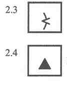
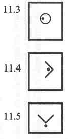

|
| Ejemplo de Descripción de Controles para evento IOF |
| Categorías: M45, M50, W21 (H45, H50, D21) |
| Recorrido nº 5 |
Longitud 7.6 km |
Desnivel 210 |
| Salida Unión carretera y muro |
| 1 101 Curva de pantano estrecho |
| 2 212 Piedra del noroeste, de 1 metro de altura |
| 3 135 Entre vegetaciones espesas |
| 4 246 Depresión del centro, parte este |
| 5 164 Ruina del este, parte oeste |
| Ruta señalizada 120 mts desde el control |
| 6 185 Muro de piedra en ruinas, esquina sureste (fuera) |
| 7 178 Espolón, al pie noroeste |
| 8 147 Cortado de arriba, 2 mts de alto, al pie |
| 9 109 Cruce de caminos |
| Ruta señalizada 250m de último control a meta |
|
| Formato de la hoja de descripción de controles |
La hoja de descripción de controles para una carrera de orientación contiene la siguiente información:
- Encabezado
- Localización de la salida
- Descripción de cada control individualmente, incluyendo cualquier instrucción especial, como la longitud y tipo de cualquier ruta marcada durante la carrera
- Tipo de ruta del último control a la meta
|
| Encabezado |
Nombre de la competición.
Categorías (línea opcional).
Código de la carrera; longitud de la carrera en kilómetros, ajustando a la décima más cercana (0’1 km); desnivel acumulado (desnivel a subir por la mejor ruta según el trazador) ajustando a los 5 mts más cercanos.
|
| Localización de la salida |
| Mostrado en la primera línea de las descripciones, usando una descripción como si fuese un elemento de control.
|
| Descripción individual de los controles |
| Los controles están en el orden en que serán visitados, y puede incluir cualquier instrucción especial, como la longitud y tipo de cualquier ruta marcada durante la carrera. Se debe utilizar una línea más gruesa cada cuatro descripciones, así como en cada lado de cada instrucción especial.
|
|
A Número de control
B Código de control
C Cuál entre objetos similares
D Elemento del control
E Apariencia
F Dimensiones/Combinaciones
G Localización de la baliza
H Otra información
|
| Explicación de las columnas |
Cada control es descrito de la siguiente manera:
- Columna A: Número del control
La numeración de los controles es la secuencia en la que deben ser visitados, a menos que la descripción sea para una carrera tipo Score.
- Columna B: Código de control
El código de control debe ser un número mayor de 30.
- Columna C: Cuál entre objetos similares
Esta columna es utilizada cuando hay más de un objeto similar dentro del círculo de control; por ejemplo, el del sureste.
- Columna D: Elemento del control
Corresponde al elemento que está mostrado en el mapa, en el centro del círculo que define el lugar del control; ej. Claro, Piedra. La descripción para cada control está basada en las Especificaciones Internacionales para Mapas de Orientación (International Specifications for Orieteering Maps, ISOM 2000).
- Columna E: Apariencia
Proporciona más información sobre la naturaleza del elemento si es necesaria; por ejemplo, cubierto de vegetación, en ruinas.
En ciertas circunstancias esta columna es usada también para el segundo elemento de control cuando la descripción lo requiere.
- Columna F: Dimensiones/Combinaciones
Las dimensiones del elemento deben ser dadas cuando el tamaño del elemento de control en el mapa está representado simbólicamente y no a escala.
Columna también utilizada para la combinación de dos símbolos (cruce; unión).
- Columna G: Localización de la baliza
Posición de la baliza respecto al elemento; por ejemplo, esquina oeste (fuera); al pie sur.
- Columna H: Otra información
Otra información que puede ser de importancia al competidor; por ejemplo, radio control; avituallamiento.
|
| Instrucciones especiales |
| Estas líneas van dentro de la descripción de controles y dan información específica sobre el tipo de ruta que debe ser seguida en ese punto; por ejemplo, ruta señalizada de 50m desde el control; punto de cruce obligatorio.
|
| Tipo de ruta desde el último control hasta la meta |
| Esta línea muestra la distancia del último control a la meta, y el tipo de cualquier ruta señalizada hacia la meta.
|
| Explicación de los símbolos |
| Al dar un número de referencia ISOM se muestra la relación con el símbolo del mapa como se define en las especificaciones ISOM 2000.
|
| Columna C: Cuál entre objetos similares |
| Ref. Símbolo |
Nombre |
Descripción |
|
El del norte |
El de más al norte de dos elementos similares, o el más al norte de varios elementos similares. |
| El del sureste |
El de más al sureste de dos elementos similares, o el de más al sureste de varios elementos similares. |
| El de arriba |
Cuando el elemento de control está directamente encima de un elemento similar. |
| El de abajo |
Cuando el elemento de control está directamente debajo de un elemento similar. |
| El del medio |
Cuando el elemento de control es el del medio de entre un número de elementos similares. |
|
| Columna D: Elemento de control |
| Ref. Símbolo |
Nombre |
Descripción |
Isom |
|
Terraza |
Zona plana en una ladera. |
|
| Espolón |
Saliente del terreno o “nariz” destacando sobre el terreno circundante. |
|
| Reentrante |
Entrante en el terreno; vaguada; lo contrario a un espolón. |
|
| Terraplén |
Cambio abrupto en el nivel del suelo que puede ser claramente distinguido de sus alrededores. |
106 |
| Cantera |
Trabajo en grava, arena o piedra, en terreno plano o inclinado. |
106 |
|
Muro de tierra |
Estrecho muro de tierra que se eleva sobre el terreno circundante; puede estar hecho de piedras parcialmente, generalmente hecho por el hombre. Usado con el símbolo 8.10 para indicar un muro de tierra en ruina. |
107-108 |
| Zanja de erosión |
Vaguada de erosión o zanja, normalmente seca. |
109 |
| Pequeño surco de erosión |
Pequeño surco de erosión o zanja, normalmente seca. |
110 |
| Colina |
Punto elevado. Dibujado en el mapa con curvas de nivel. |
101-111 |
|
Cota |
Pequeña y obvia elevación. Utilizado con el símbolo 8.5 para indicar cota rocosa. |
112-113 |
| Collado |
Punto bajo entre dos puntos más altos. |
|
| Depresión |
Depresión u hoyo rodeada de zonas más elevadas por todas partes. Dibujado en el mapa con curvas de nivel. |
114 |
|
Pequeña depresión |
Pequeña, suave depresión natural u hoyo rodeada de zonas más elevadas por todas partes. |
115 |
| Hoyo/foso |
Agujero u hoyo con lados de inclinación variable. Generalmente hecho por el hombre. Usado con el símbolo 8.5 para indicar un agujero rocoso. |
116-204 |
| Terreno irregular |
Terreno claramente irregular, con elementos demasiado pequeños o numerosos para ser dibujados individualmente; incluye madrigueras. |
117 |
|
| Rocas y piedras (ISOM sección 4.2) |
| Ref. Símbolo |
Nombre |
Descripción |
Isom |
|
Cortado, cara rocosa |
Cortado o cara rocosa. Puede ser pasable o impasable. |
201-203 |
| Pilar rocoso |
Saliente natural de roca alto. |
202 |
|  |
Cueva |
Agujero en una cara rocosa o en un lateral de una ladera, que conduce con frecuencia a trabajos subterráneos. |
205 |
| Piedra |
Bloque rocoso o piedra prominente y libre del terreno. |
206-207 |
|
Zona rocosa |
Área cubierta de tantas rocas que no pueden ser cartografiadas individualmente. |
208 |
| Piedras unidas |
Pequeño y característico grupo de piedras tan unidas que no pueden ser cartografiadas individualmente. |
209 |
| Pedregal |
Área cubierta con multitud de piedras y rocas. |
210 |
|
Afloramiento rocoso |
Área de roca descubierta, sin tierra ni vegetación encima. Se puede correr por ella. |
212 |
| Pasaje estrecho |
Pasaje entre dos cortados o caras rocosas enfrentados entre si. |
|
|
| Agua y pantanos (ISOM sección 4.3) |
| Cabe destacar que los símbolos de los elementos lineales relacionados con agua están inclinados de arriba a abajo de izquierda a derecha, así como los símbolos de los elementos lineales hechos por el hombre están inclinados de arriba a abajo de derecha a izquierda.
|
| Ref. Símbolo |
Nombre |
Descripción |
Isom |
|
Lago |
Gran área de agua, normalmente impasable. |
301 |
| Charca |
Pequeña área de agua. |
302 |
| Agujero con agua |
Agujero o depresión rellenos de agua. |
303 |
|
Río, curso de agua |
Curso de agua natural o artificial, con agua en movimiento o estancada. |
304-306 |
| Pequeño canal de agua |
Pequeño canal de agua natural o artificial, que puede tener agua temporalmente. |
307 |
| Pantano estrecho |
Pantano estrecho o pequeño hilo de agua, demasiado estrecho para ser dibujado en el mapa con el símbolo de pantano. |
308 |
|
Pantano |
Área permanentemente húmeda, con vegetación de pantano. |
309-311 |
| Terreno firme en pantano |
Zona no empantanada dentro de un pantano o entre dos pantanos. |
309-311 |
| Pozo |
Pozo que contiene agua o un manantial, claramente visible en el suelo. Con frecuencia con alguna estructura artificial alrededor.. |
312 |
|
Manantial |
Nacimiento de un curso de agua con flujo resaltable. |
313 |
| Tanque de agua |
Contenedor de agua hecho por el hombre. |
|
|
| Vegetación (ISOM sección 4.4) |
| Ref. Símbolo |
Nombre |
Descripción |
Isom |
|
Campo abierto |
Área sin árboles. Pradera, césped, o campo. También páramo o brezal. |
401-403 |
| Campo semiabierto |
Área de campo abierto con árboles y arbustos diseminados. |
402-404 |
| Esquina de bosque |
Esquina o punta de un área boscosa que se proyecta sobre terreno abierto. |
405-406 |
|
Claro |
Pequeña área de tierra libre de árboles dentro del bosque. |
401-403 |
| Vegetación espesa |
Pequeña área de bosque en la que los árboles o la vegetación baja es tan densa que dificultan el paso. |
410 |
| Seto |
Seto artificial de árboles y arbustos difícil de cruzar. |
410 |
|
Límite de vegetación |
Límite característico entre diferentes tipos de árboles o vegetación. |
416 |
| Bosquecillo |
Pequeña área de árboles en terreno abierto. |
|
|
Árbol característico |
Árbol distintivo o característico en terreno abierto o bosque; frecuentemente se proporciona información sobre su naturaleza. |
|
| Tocón, raíz |
Es el tocón de un árbol. También la raíz arrancada de un árbol caído, con o sin el tronco. |
|
|
| Elementos hechos por el hombre (ISOM sección 4.5) |
| Ref. Símbolo |
Nombre |
Descripción |
Isom |
|
Carretera |
Superficie asfaltada o pista de tierra, acondicionada para vehículos en condiciones climatológicas normales. |
501-504 |
| Camino/pista |
Ruta visible hecha por personas o animales. Los caminos pueden ser transitados por vehículos todoterreno. |
505-508 |
| Cortafuegos |
Línea clara en el bosque, sin un camino que transcurra a lo largo de la misma. |
509 |
|
Puente |
Punto de cruce sobre un curso de agua o sobre cualquier otro elemento linear. |
512-513 |
| Tendido eléctrico |
Cables de un tendido eléctrico, teléfonos, teleférico o telesilla. |
516-517 |
| Poste de tendido |
Poste o pilar de un tendido eléctrico, de teléfonos, teleférico o telesilla. |
516-517 |
|
Túnel |
Paso subterráneo bajo carreteras, vías, etc. |
518 |
| Muro de piedra |
Muro de piedra delimitador o banco revestido de piedra. Usado con el símbolo 8.10 indica un muro de piedra en ruinas. |
519-521 |
| Valla |
Valla delimitadora, de metal o madera. Usado con el símbolo 8.10 indica una valla en ruinas. |
522-524 |
|
Punto de paso |
Paso a través o por encima de un muro, valla o tubería, mediante una puerta o algo similar. |
525 |
| Construcción |
Estructura de madera, ladrillo o piedra. |
526 |
| Área pavimentada |
Área asfaltada o pavimentada usada como aparcamiento o con otros fines. |
529 |
|
Ruina |
Restos de una construcción que se ha derruido. |
530 |
| Tubería |
Tubería (gas, agua, petróleo, etc.) sobre el nivel del suelo. |
533-534 |
| Torre |
Estructura alta de metal, madera o ladrillo, construida normalmente para vigilancia forestal. |
535-536 |
|
Mojón señalizador |
Montón de piedras o mojón hecho por el hombre. Montón señalizador, conmemorador de algún hecho, señal de límite o punto trigonométrico. |
537 |
| Pesebre, comedero |
Construcción para guardar la comida del ganado. |
538 |
| Escaleras |
Escaleras de al menos dos o más peldaños. |
862 |
|
| Objetos especiales |
| Ref. Símbolo |
Nombre |
Descripción |
Isom |
|
Objeto especial |
Si se utiliza se debe dar a los corredores la explicación de su naturaleza en la información técnica previa a la carrera. |
|
| Objeto especial |
Si se utiliza se debe dar a los corredores la explicación de su naturaleza en la información técnica previa a la carrera. |
|
|
| Objetos especiales del terreno |
Generalmente no se recomienda introducir símbolos locales. Si se utilizan símbolos locales en competiciones que pueden atraer a corredores de otros lugares se debe dar información sobre la naturaleza de los mismos a los participantes en la información técnica previa a la competición.
Aquí mostramos los símbolos de esta categoría propuestos en las primeras especificaciones para la Descripcion de Controles IOF.
|
| Ref. Símbolo |
Nombre |
Descripción |
Isom |
 |
Puesto de caza |
Estructura unida a un árbol desde la que un tirador o un observador puede sentarse. |
|
| Lamedero de sal |
Bloque de sal para animales (generalmente para ciervos). |
|
| Carbonera |
El claro remanente de un área donde se ha estado quemando carbón. |
|
|
Plataforma |
Pequeña área a nivel en una ladera; generalmente hecha por el hombre. |
|
| Hormiguero |
Montón de hojas hecho por hormigas. |
|
|
| Columna E: Apariencia |
| Ref. Símbolo |
Nombre |
Descripción |
|
Suave |
Cuando el elemento del control es más suave que elementos similares en el mismo área. Ej. vaguada, suave. |
| Profundo |
Cuando el elemento del control es más profundo que elementos similares en el mismo área. Ej. hoyo, profundo. |
| Cubierto de vegetación |
Cuando el elemento del control está parcialmente cubierto de vegetación baja o arbustos que no están indicados en el mapa. Ej. ruina, cubierta de vegetación. |
|
Abierto, despejado |
Cuando el elemento está en un área donde la cubierta de árboles es menor que en los alrededores y esto no está indicado en el mapa. Ej. pantano, abierto. |
| Rocoso, pedregoso |
Cuando el elemento del control está en un área rocosa o pedregosa no indicada en el mapa. Ej. agujero, rocoso. |
| Empantanado |
Cuando el elemento está en un área de suelo pantanoso no indicado en el mapa. Ej. vaguada, empantanada. |
|
Arenoso |
Cuando el elemento está en un área de suelo arenoso no indicado en el mapa. Ej. espolón, arenoso. |
| De hoja fina |
Cuando el árbol o árboles asociados con el elemento de control tienen hojas finas; ej. árbol característico, de hojas finas (acículas). |
|
De hoja ancha |
Cuando el árbol o árboles asociados con el elemento de control tienen hojas anchas; ej. bosquecillo, árboles de hoja ancha. |
| En ruinas |
Cuando el elemento se ha caído al nivel del suelo. Ej. valla, caída. |
|
| Columna F: Dimensiones/Combinaciones |
| Dimensiones |
| Ref. Símbolo |
Nombre |
Descripción |
|
Altura |
Altura del elemento en metros. |
| Tamaño |
Dimensiones horizontales del objeto en metros. |
| Altura en ladera |
Altura en metros de un objeto en una ladera (lado de arriba/lado de abajo). |
| Alturas de dos objetos |
Alturas de dos elementos con el control entre ellos. |
|
| Combinaciones |
| Ref. Símbolo |
Nombre |
Descripción |
|
Cruce |
El punto en el que dos elementos lineales se cruzan. |
| Unión |
Punto en el que dos elementos lineales se juntan. |
|
| Cuado cualquiera de estos símbolos son usados en la columna F, los dos elementos con los que se cruzan o juntan deben ser mostrados en las columnas D y E. Por ejemplo:
|
| D |
E |
F |
|
|
|
Cruce de caminos |
Punto en el que dos objetos lineales similares se cruzan. |
| Cruce camino/río |
Punto en el que dos objetos lineales diferentes se cruzan. |
|
Unión de carreteras |
Punto en el que dos objetos lineales similares se unen. |
| Unión río/pantano estrecho |
Punto en el que dos objetos lineales diferentes se unen. |
|
| Columna G: Localización de la baliza |
| Si no se utiliza ningún símbolo para indicar la localización de la baliza respecto al elemento de control, la baliza debe estar posicionada en el centro del elemento o tan cerca como sea posible del mismo.
|
| Ref. Símbolo |
Nombre |
Descripción |
|
Lado noreste |
Utilizado cuando el objeto se extiende sobre la superficie del suelo. Ej. piedra, lado noreste; ruina, lado oeste. |
| Borde sureste |
Utilizado cuando: |
|
|
a) El elemento se extiende hacia abajo desde la superficie del suelo circundante y el control está situado en el límite, a nivel del suelo; Ej. depresión, borde sureste. |
|
|
b) El elemento se extiende sobre un área significativa y el control está situado en el borde de esa área. Ej. pantano, borde oeste; claro, borde noroeste. |
|  |
Parte oeste |
Utilizado cuando el elemento se extiende sobre un área significativa y el control no está ni en el centro ni en uno de sus bordes; Ej. pantano, parte oeste; depresión, parte sureste. |
| Esquina este (dentro) |
Utilizado cuando:
a) El límite de un elemento gira con un ángulo de entre 45º y 135º. Ej. Campo abierto, esquina este (dentro); ruina, esquina noroeste (fuera).
|
| Esquina sur (fuera) |
b) Un elemento linear gira con una esquina. Ej. valla, esquina sur (dentro); muro de piedra, esquina suroeste (fuera). |
|
Punta |
Utilizado cuando el límite de un elemento gira con un ángulo menor de 45º; Ej. pantano, punta suroeste. |
| Curva |
Utilizado cuando un elemento linear hace un pequeño cambio de dirección; ej. curva de camino; curva de río. |
| Extremo noroeste |
Punto en el que un elemento lineal termina o empieza; ej. cortafuegos, extremo noroeste; muro de piedra, extremo sur. |
|
Parte superior |
Cuando el elemento se extiende sobre dos o más curvas de nivel y el control es situado cerca de lo alto; ej. surco de erosión, parte alta. |
| Parte baja |
Cuando el elemento se extiende sobre dos o más curvas de nivel y el control es situado cerca de su parte baja; ej. vaguada, parte baja. |
|
Encima |
Cuando el control está situado en la parte más alta del elemento: ej. colina, encima. |
| Al pie (sin dirección) |
Cuando el control está situado en la unión de la parte lateral del elemento con la superficie del área circundante; ej. cortado, al pie. |
|
Al pie noreste |
Como en el anterior, pero utilizado cuando el objeto es tan grande que permite colocar la baliza en más de un lugar alrededor suyo; ej. colina, al pie noreste. |
| Debajo |
Cuando el control es colocado debajo del objeto; ej. tubería, debajo. |
| Entre |
Cuando el control está localizado entre dos objetos; ej. entre vegetaciones espesas; entre piedra y cota. |
|
| Cuando el símbolo 11.15 “Entre” se coloca en la columna G, los dos elementos entre los que está el control se deben mostrar separadamente en las columnas D y E. Por ejemplo:
|
|
Entre vegetaciones espesas |
Punto entre dos elementos similares. |
| Entre piedra y cota |
Punto entre dos elementos diferentes. |
|
| Columna H: Otra información |
| Ref. Símbolo |
Nombre |
Descripción |
|
Puesto de primeros auxilios |
Punto de control con ayuda de primeros auxilios. |
| Avituallamiento |
Punto de control con avituallamiento. |
| Radio control |
Localización de un punto de radio control. |
| Punto de control |
Presencia de controladores (control manual). |
|
| Informaciones especiales |
Se puede proporcionar información especial a los corredores dentro del cuerpo de la hojita de descripción de controles.
Si una ruta señalizada ha de ser seguida desde un control en particular o entre controles:
|
|
Seguir ruta señalizada, 60 mts desde el control. |
| Seguir ruta señalizada de 300 mts entre controles. |
|
| Si hay un punto de paso obligatorio entre dos controles:
|
|
Punto de paso obligatorio por puerta o similar. |
| Punto de paso obligatorio por puente. |
| Punto de paso obligatorio por túnel. |
|
| En un cambio de mapa, o si hay que seguir una ruta señalizada entre un control y el cambio de mapa, lo que sigue a la última descripción de control de la primera parte de la carrera debe ser de esta manera:
|
 |
Cambio de mapa en el lugar de control. |
| Seguir ruta señalizada, 50 mts hasta el cambio de mapa. |
|
| Tipo de ruta desde el último control hasta la meta. |
| Siguiendo a la última descripción, el tipo de ruta a seguir desde el último control hasta la meta se indica de una de las maneras siguientes:
|
|
400 m desde último control a meta. Seguir ruta señalizada. |
| 150 m desde último control a meta. Navegar hasta el balizado convergente y entonces seguir las cintas. |
| 380 m desde último control a meta. Navegar hasta la meta. No hay señalización ni cintas. |
|